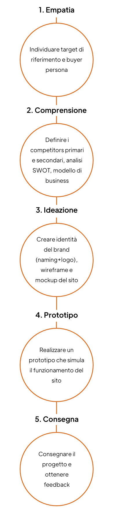

Copyright ¬© 2022 Giulia Ricchio | Sito creato con ü§ç e ü߆
Ruolo: graphic designer, UX/UI designer, developer
Timeline: 1 mese | aprile-maggio 2020
Brief: Realizzare un e-commerce per un negozio di scarpe che da 30 anni seleziona importanti marchi Made in Italy. Creare l’identità del brand attraverso naming e logo unici e rappresentativi.
Le fasi del processo di progettazione
1. Empatia
Età: 30-60 anni
Area geografica: Italia
Genere: donne e uomini
Occupazione: liberi professionisti, imprenditori
Livello di reddito: alto
Livello di istruzione: medio-alto
Età: 34 anni
Occupazione: Architetto
Città: Roma
Archetipo: l'esploratore
Colore personalità: Rossa
Anna è un architetto di 34 anni che vive a Roma. Grande appassionata di fotografia. È la cliente ideale perché cura il suo look, adora fare acquisti online e le piace leggere riviste di moda.
Obiettivi
- Acquistare calzature Made in Italy
- Trovare consigli di stile
Frustrazioni
- Scarsa qualità dei materiali
- Calzature scomode
Brand
Personalità
Età: 60 anni
Occupazione: Avvocato
Città: Firenze
Archetipo: il creatore
Colore personalità: Gialla
Paolo è un avvocato di 60 anni che vive a Firenze. Nel tempo libero restaura la sua auto d’epoca e partecipa a mostre e raduni. È il cliente ideale perché ama curare il suo stile raffinato e stravagante.
Obiettivi
- Acquistare accessori raffinati
- Personalizzare il suo look
Frustrazioni
- Poca originalità
- Ristretta selezione di accessori
Brand
Personalità
3. Ideazione
3. Ideazione
3. Ideazione
5. Consegna